DCL-AIM 2019: Decentralized Coordination Learning of Autonomous Intersection Management for CAVs
这是一份逐页、逐段的双语阅读笔记。英文栏使用 paraphrase 和 reading note，中文栏解释论文逻辑，summary 栏把每段压缩成一句中文要点；References 页不逐条翻译，而整理成对 AIM、JSSP scheduling、MARL 和 evaluation 有用的 citation map。
Page 1: Title, Abstract, and Keywords
Motivationtitle
The title signals a learning-based AIM method where each CAV makes decisions as part of a decentralized coordination process.
题目里的 DCL-AIM 说明它不是集中式优化器，而是让车辆智能体在需要冲突协调时学习联合动作。
这篇文章把 AIM 问题转成“去中心化多车协调学习”问题。
abstract
The abstract frames sequential vehicle movement through an intersection as a multi-agent Markov decision problem and introduces DCL-AIM to reduce delay while preserving collision-free behavior.
作者把每辆车视为 agent，把每一步是否加速、减速或保持速度视为 action，把延误的负值作为 reward。学习目标是让所有车协同通过路口。
摘要的主线是：MAMDP 建模 + DCL 分解 + 延误最小化。
results
The paper claims better performance than FCFS-AIM, Longest-Queue-First, and signal control in simulation.
这些 baseline 很重要：FCFS 是 AIM 经典启发式，LQF 偏向排队更长车道，Signal 是传统 Webster 信号控制。DCL-AIM 的定位是学习到比这些规则更好的策略。
作者要证明学习策略在平均延误和拥堵处理上优于规则策略。
Page 2: Introduction, CAVs, and FCFS-AIM Limits
BackgroundThe opening motivates CAVs through sensing, communication, and automated control, then connects those capabilities to safer and more efficient intersection management.
CAV 的价值在于车辆能感知、通信和自动控制，所以路口不一定只能靠红绿灯固定释放车流。
CAV 提供了无信号 AIM 的技术前提。
The paper reviews reservation-based AIM, especially the FCFS style where vehicles request crossing slots and the manager checks conflicts.
FCFS-AIM 的直觉是“谁先到谁先过”。它简单、安全、容易实现，但没有主动搜索全局更优的通行顺序。
FCFS 是 AIM 的基础规则，但不是最优调度。
The authors argue that learned policies may exploit spatiotemporal capacity better than a fixed priority rule.
这句话对应你的 JSSP 思路：路口资源是时空资源，好的策略应利用非冲突轨迹的并行通行，而不是只按到达顺序排队。
论文开始从“规则放行”转向“学习资源利用策略”。
Page 3: Contributions and AIM Related Work
PositioningThe contribution paragraph says DCL-AIM explicitly detects when coordination is needed and learns actions only at the relevant interaction scale.
贡献不只是“用了 RL”，而是把 multi-agent state 分成独立部分和需要协调的部分，从而避免所有车辆一直做全局联合动作。
主要贡献是稀疏协调：有冲突才联合学习。
The AIM literature discussion revisits reservation protocols and centralized management approaches for CAV intersections.
这些工作为“车辆申请、系统检查冲突、安排通行”的 AIM 框架奠基。DCL-AIM 没有否定 reservation 思想，而是把动作选择交给学习策略。
Related work 先承接 AIM 的 reservation 基础。
The optimization-based studies are described as powerful but difficult to scale or execute in real time when many vehicles interact.
优化式 AIM 通常可以建更清楚的约束，但车辆数量、连续时间、车辆动力学和冲突组合会让求解压力变大。
优化方法表达力强，但可扩展性和实时性是压力点。
Page 4: RL, MARL, and Decentralized Coordination Learning
Theory ContextThe RL review highlights learning from interaction with the environment, which is attractive when handcrafted traffic-control rules are too rigid.
这里强调 RL 的核心优势：不用把每个路况规则写死，而是通过 reward 让策略从模拟环境中学。
RL 被用来替代固定规则设计。
The MARL discussion notes two opposing difficulties: centralized learning faces huge joint spaces, while decentralized learners see changing behavior from other agents.
集中式 MARL 要枚举所有车的联合状态和动作，状态动作空间指数增长；去中心化时，每个 agent 看到其他 agent 正在学习，环境分布会变。
MARL 的两难是维度灾难和环境非平稳。
DCL is introduced as a middle path: exploit context-specific independence and coordinate only with agents whose actions truly interact.
DCL 的思想很像“局部冲突图”：不是所有车辆都互相耦合，只有轨迹空间上会冲突的车辆需要组成联合决策子问题。
DCL 用稀疏交互结构降低 MARL 难度。
Page 5: Problem Statement and Delay Objective
Problem FormulationThe problem statement assumes a reservation-style CAV intersection where vehicles communicate their arrival and movement intentions.
模型前提是 CAV 可以把自己的入口、车道、转向、速度等信息提供给控制系统或邻近车辆，因此可预测冲突。
AIM 的信息基础是车辆意图可通信、可预测。
The delay objective compares actual crossing time with an ideal travel time and sums the differences over vehicles.
这相当于把“因为协调、等待、减速造成的额外时间”作为成本。后面的 reward 就是这个延误的负值。
优化目标是全体车辆的总延误最小。
The paper argues that directly solving the centralized decision problem is impractical, so it moves to a multi-agent decision model.
这一步是从“全局优化问题”转成“每辆车一个 agent 的 MAMDP”。注意这不是证明优化不可用，而是为 DCL-AIM 的学习框架铺路。
集中求解太重，因此转向 MAMDP 和多智能体学习。
sum w_i delay_i，让救护车、公交、货车等类别进入目标函数。Page 6: MAMDP State, Speed, and Cell Occupancy
MAMDPThe model defines each CAV as an agent whose local state includes position, speed, movement intention, and local traffic context.
每辆车不是只知道“到没到路口”，而是知道自己在哪些 cells、速度是多少、要直行还是转弯，以及前方/队列情况。
车辆 agent 的状态包含位置、速度、意图和局部交通信息。
Speed is discretized by how many cells a vehicle can advance in one decision step.
这把连续运动简化为离散 cell-step 模型。后面 level 1 和 level 2 的区别，本质就是 cell 粒度不同。
速度用每步跨越多少 cell 表示。
The state representation distinguishes cells already occupied by the vehicle from cells it desires to occupy soon if it keeps moving.
occupying cells 表示车辆现在占用的空间；desired cells 表示车辆根据当前速度和安全停车距离，下一段时间可能需要的空间。
安全判断依赖当前占用格和未来期望格。
Page 7: Fig. 1, Desired Cells, and Action Choices
Cell Model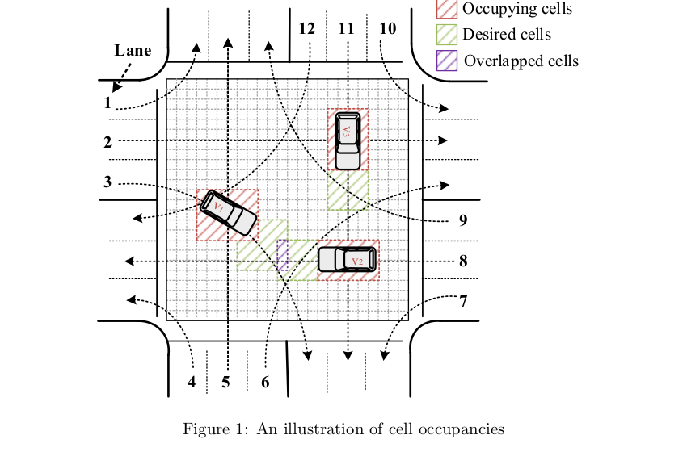
figure
The figure shows that conflict is represented geometrically by overlapping desired or occupied cells among vehicles.
图中紫色区域就是潜在冲突。如果两辆车都按原计划前进，未来安全空间发生重叠，就需要协调。
cell overlap 是 DCL-AIM 判断是否需要协调的核心信号。
The desired-cells formula expands the occupied region along the intended trajectory according to speed and braking requirements.
desired cells 把“车辆能不能安全停下”纳入占用预测，所以它不仅避免同一时刻碰撞，也避免下一步动作后刹不住。
desired cells 把未来运动和安全缓冲编码到状态中。
The action set is expressed through acceleration, deceleration, or maintaining movement subject to speed limits.
车辆动作不是选择完整路线，而是在既定路线下选择速度变化。路线/转向是状态的一部分，动作主要控制时间维度。
动作空间是离散速度控制：加速、减速或保持。
Page 8: Rewards, State Transition, and Curse of Dimensionality
Reward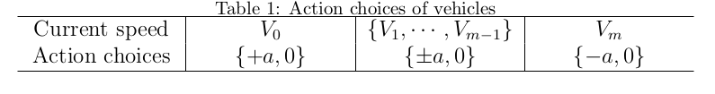
The table constrains available actions by speed: a stopped vehicle cannot decelerate, and a vehicle at maximum speed cannot accelerate.
动作空间不是任意选择，而受当前速度边界限制。这样能避免不物理的加速/减速动作。
action choices 由当前速度和速度上限/下限约束。
The reward is defined as negative delay, so maximizing cumulative reward corresponds to reducing total delay.
延误越大，reward 越负；学习算法为了最大化 reward，会偏向选择让车辆更快通过的动作。
负延误 reward 把控制目标转化为强化学习目标。
The page explains that solving the optimal joint action-value function directly becomes almost impossible as the number of CAVs grows.
每增加一辆车，joint state 和 joint action 都要乘上这辆车的可能状态/动作，因此复杂度呈指数增长。
MAMDP 的直接求解遇到维度灾难。
(100*3)^10。这就是作者必须做 DCL 分解的原因。r = -sum w_i delay_i，但要配合安全和公平约束。Page 9: Independent States, Coordinated States, and Joint Actions
DCL Core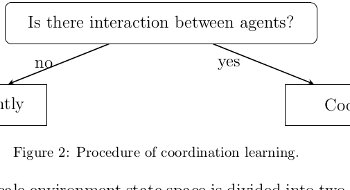
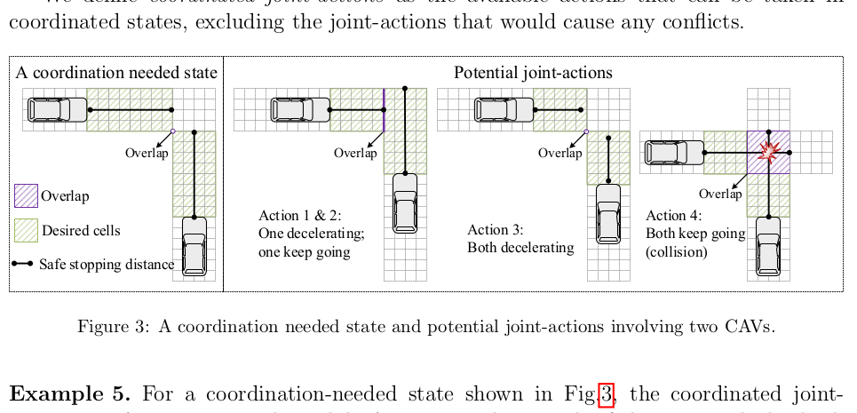
The first part says an agent can act independently when no conflicting vehicle occupies or desires overlapping cells.
这就是 context-specific independence：在某些上下文里，车辆的最佳动作不依赖其他车辆，因此不需要联合决策。
无冲突时车辆用独立策略即可。
When overlap exists, the vehicles form a coordination-needed subset and evaluate joint actions together.
注意不是全路口所有车辆一起联合动作，而是只把相关冲突车辆组成局部子集 K。
有冲突时只协调局部冲突车辆集合。
The potential joint-action set removes any combination that would cause an unsafe overlap in the next state.
Fig. 3 里两辆车同时 keep going 会碰撞，所以该 joint action 被排除。剩下动作虽然可能慢一点，但保持安全可行。
DCL-AIM 通过排除冲突 joint actions 保证安全。
Page 10: Algorithms 1-2 and Q-table Decomposition
Algorithm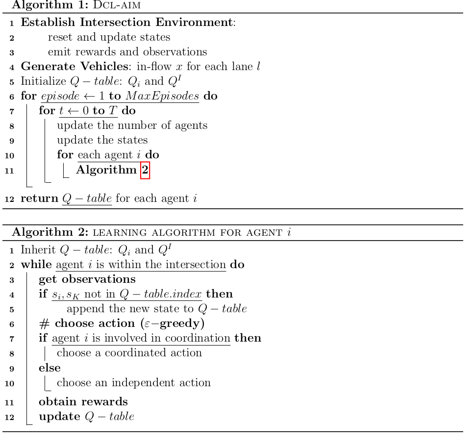
Algorithm 1 describes the training loop: establish the intersection environment, generate vehicles, initialize Q-tables, and iterate episodes and time steps.
这类似一个仿真训练器：每个 episode 模拟一批车过路口，重复很多次以后得到可执行策略。
Algorithm 1 是 DCL-AIM 的整体训练流程。
Algorithm 2 is the per-agent procedure: observe, add unseen states to the table, choose an action, receive rewards, and update values.
每辆车都运行类似 Q-learning 的过程，但是否查 individual table 或 joint table 取决于当前是否处于 coordinated state。
Algorithm 2 是单车 agent 的学习和动作选择流程。
The Q-function is decomposed into an individual-action value table for independent states and a joint-action value table for coordinated states.
独立状态用 Q_i(s_i,a_i)，协调状态用 Q^I(s_K,a_K)。这就是减少维度的关键。
Q-table 分成 individual Q 和 coordination joint Q。
Page 11: Observability, Rewards, Exploration, and QUpdate
Learning UpdateThe paper assumes that vehicles in coordinated states can clearly perceive or communicate the joint state needed for action selection.
这是强假设：车辆能准确知道相关车辆的位置、速度、意图和 cell occupancy。现实中通信延迟和感知误差会挑战这个假设。
DCL-AIM 依赖较强的可观测和 V2V 信息假设。
The reward equations assign negative delay to the whole system, to independent agents, or to coordinated subsets.
独立状态只看本车延误；协调状态看冲突集合 K 的总延误。这保持了 reward 与当前决策范围一致。
reward 按当前决策范围分成 global、individual、joint 三种。
Epsilon-greedy exploration is used so every state-action pair can continue to be sampled rather than immediately locking into a greedy policy.
探索是为了收敛和避免早期错误策略。交通仿真训练中可以探索，真实部署时通常会使用训练后的策略并严格安全过滤。
epsilon-greedy 用随机探索换取更稳定学习。
Page 12: QUpdate Cases and Simulation Setup Begins
ImplementationThe update rules depend on whether the agent remains independent, enters coordination, leaves coordination, or stays coordinated.
DCL-AIM 的更新不是单一公式，而是根据状态类型切换。这样 individual Q 和 joint Q 可以在各自适用的上下文中学习。
QUpdate 由状态是否协调决定。
The simulation is implemented in Python and uses a four-way, six-lane isolated intersection.
实验不是网络级多路口，而是单个典型交叉口。这与本文“可观测、孤立路口”的假设一致。
实验场景是一个 4-way-6-lane 孤立交叉口。
The setup includes DSRC-style communication range, lane width, speed limit, and a fixed time step.
这些参数把抽象 MAMDP 变成具体仿真：cell 大小、每步时间和速度上限会直接影响 state/action 粒度。
仿真参数决定离散模型的时间和空间精度。
Page 13: Discretization Level 1 and Fig. 4
Discretization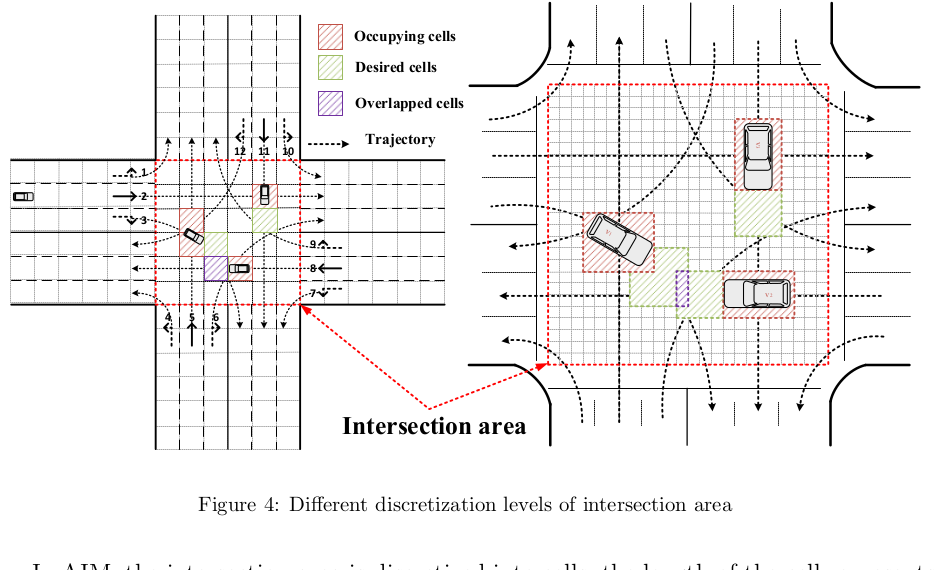
The figure contrasts coarse and fine cell discretizations of the same intersection area.
粗粒度 cell 计算更简单，但表达车辆形状和转向轨迹较粗；细粒度 cell 更精细，但 Q-table 状态数更大。
离散化粒度决定精度和计算复杂度的平衡。
At level 1, each decision step can move a vehicle roughly one cell, making the action set very compact.
Level 1 的动作近似为 0/1：0 表示减速或等待，1 表示继续或加速。这个设置利于训练，但行为比较粗。
Level 1 用较粗 cell 换取较小动作空间。
The page gives an example where turning trajectories occupy more than one cell, showing why geometry matters.
转弯车辆不是点质量，它会占用多个 cells。对 AIM 来说，冲突不是只看中心点，而要看车辆形状和轨迹扫过区域。
转弯轨迹会扩大空间占用，需要在冲突检测里体现。
Page 14: Sequential Decision Process and Vehicle Generation Begins
Dynamics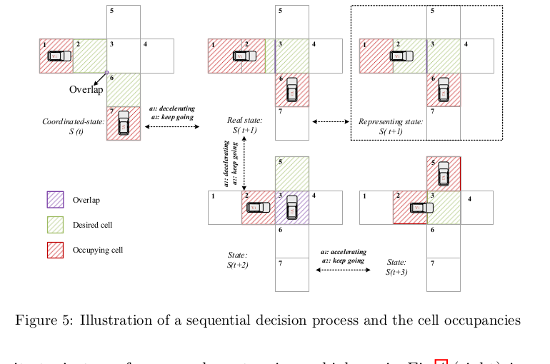
Fig. 5 illustrates how actions at one step transform the real state and represented cell state at the next step.
真实车辆运动是连续的，但模型用 cells 表示。图里展示了实际位置和离散表示之间的转换。
连续运动被投影到离散 cell state 中。
Level 2 uses a 24 x 24 grid with smaller cells, allowing a vehicle to occupy multiple cells according to its physical dimensions.
Level 2 更接近车辆真实长度和宽度，因此能更精细地表达占用空间，但训练压力明显上升。
Level 2 用细网格提升几何精度。
The authors state that coordinated joint actions guarantee collision-free behavior while the reward function pushes the learned policy toward delay minimization.
这是全篇最关键的二分：安全由动作可行集过滤保证，效率由 reward 学习推动。不是只靠 reward 避免碰撞。
安全靠约束过滤，效率靠 reward 学习。
Page 15: Poisson Vehicle Generation and Learning Parameters
Simulation Setup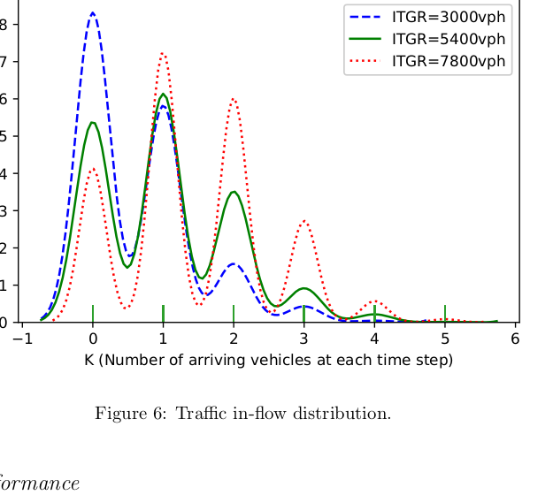
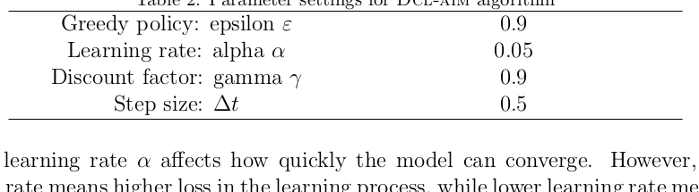
The paper uses a Poisson process to avoid unrealistically uniform arrivals and to create stochastic traffic demand.
Poisson 生成让车辆到达有随机性，适合模拟不同 traffic generating rate 下的非均匀车流。
车辆到达用 Poisson 过程随机生成。
Fig. 6 shows how higher inflow rates shift the distribution toward more vehicles arriving in each step.
ITGR 越高，每个 step 出现多辆车的概率越大，路口更容易进入密集交互状态。
车流强度越高，协调需求越频繁。
The parameter table sets high exploration probability, moderate learning rate, high discount factor, and a 0.5-second decision step.
高折扣因子说明策略重视长期延误；0.5 秒步长让动作更新频率较高；学习率过大可能震荡，过小则收敛慢。
参数设置平衡探索、学习速度和长期收益。
Page 16: Learning Performance and Convergence
Convergence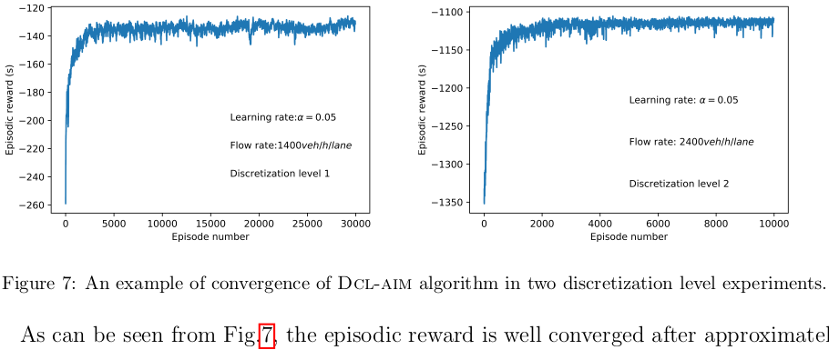
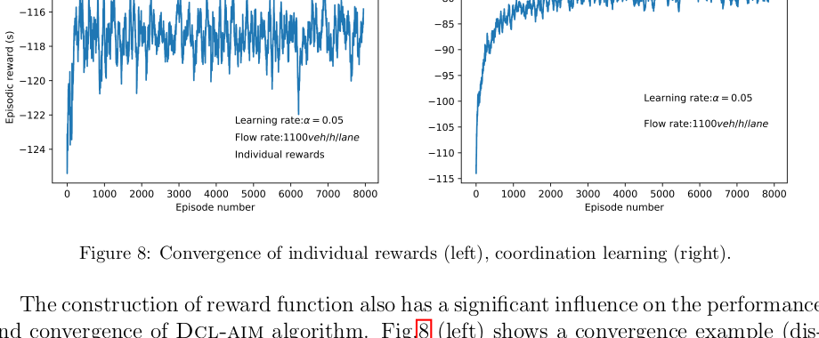
The convergence plots show episodic rewards improving quickly and then stabilizing, with later noise caused by exploration.
reward 曲线越接近稳定，说明策略逐渐学会减少延误。后期波动主要来自 epsilon-greedy 的随机探索。
DCL-AIM 在仿真中能够较快收敛。
The individual-reward case can still converge, but it converges to lower reward, meaning higher delay.
如果所有状态都只看 individual reward，车辆可能做局部合理但全局较差的动作。协调 reward 能把冲突车辆的联合效果纳入学习。
只看个体奖励会降低整体策略质量。
The authors use these curves to justify that DCL decomposes the problem without sacrificing too much global performance.
这正是 DCL 的卖点：不要全局 joint Q 的爆炸复杂度，但也不要完全独立学习的局部短视。
DCL 在复杂度和全局性能之间折中。
Page 17: Effectiveness Comparison and Average Delay
Evaluation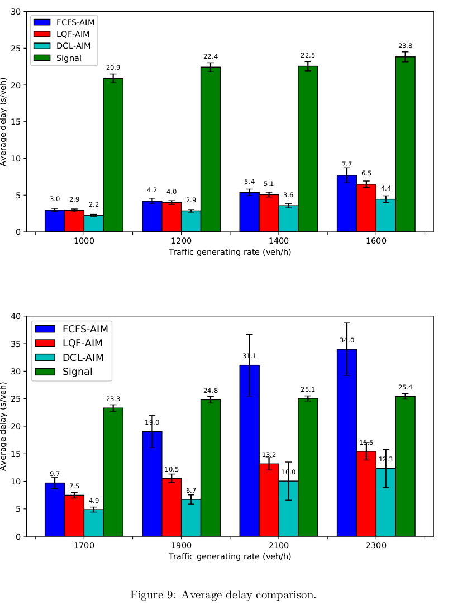
The comparison uses trained DCL-AIM policies and benchmarks against FCFS, LQF, and Webster-style signal control.
这里比较的是训练完成后的执行表现，不是训练过程中的 reward。基准覆盖 AIM 规则、排队启发式和传统信号控制。
实验用三类 baseline 评价 DCL-AIM 的实际控制效果。
Fig. 9 shows DCL-AIM achieving lower average delay across traffic rates, while signal control remains much higher in light and medium traffic.
图中青色 DCL-AIM 柱通常最低，说明它能更好利用无信号 CAV 的细粒度时空资源。信号控制在轻流量下浪费绿灯相位和冲突区空档。
DCL-AIM 在平均延误上优于三种 baseline。
The page notes that after training, the learned policy can be read and executed very quickly at each decision step.
Q-table 查询很快，这是表格型 RL 的部署优势。代价是 state/action 粒度不能无限细，否则表会变大。
训练后执行开销低，适合实时决策。
Page 18: Randomness, Delay Fluctuation, and Safety Buffer
Robustness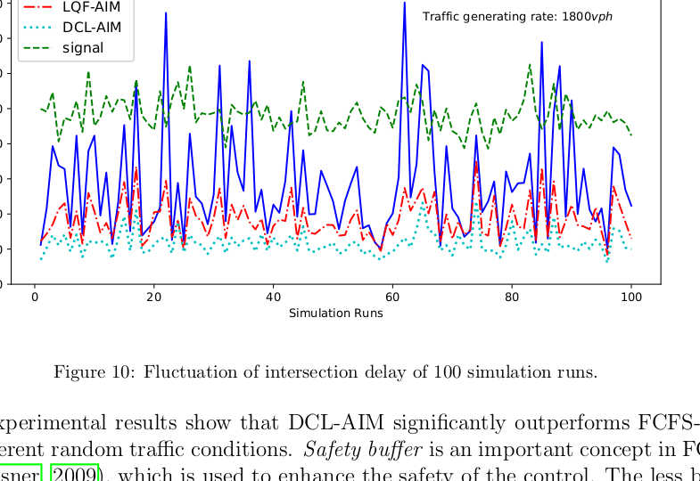
The authors run each traffic-generating scenario many times to reduce the impact of randomness and report confidence intervals.
随机到达会让单次仿真不稳定，所以重复 100 次是必要的。柱状图的误差线反映不同随机种子的结果波动。
多次仿真用于检验随机车流下的稳定性。
Fig. 10 indicates that FCFS delay fluctuates more strongly, while DCL-AIM stays lower and smoother under the same demand.
FCFS 的优先级完全依赖到达顺序，所以随机到达顺序会显著影响总延误。DCL-AIM 学到的策略能利用冲突结构缓冲这种随机性。
DCL-AIM 对随机交通输入更稳定。
The safety-buffer discussion contrasts FCFS-style extra buffer with DCL-AIM's occupancy and desired-cell mechanism.
DCL-AIM 不额外加固定安全 buffer，而是通过 occupying/desired cells 和 coordinated joint actions 排除前后/侧向碰撞。
DCL-AIM 的安全性来自 cell conflict filtering。
Page 19: LQF, Signal Control, Congestion Scenarios, and Table 3
Congestion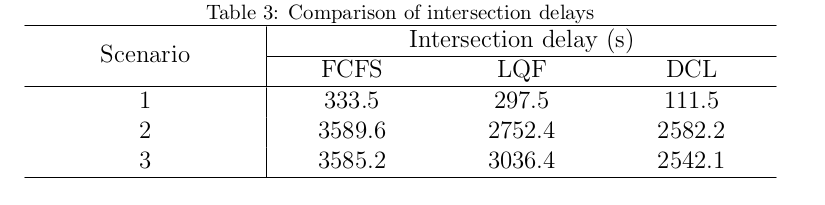
The LQF discussion says serving the longest queue can be locally attractive but may not be best over a longer horizon.
LQF 类似“当前哪个队长先放哪个”，但它可能忽略未来冲突结构和非冲突方向的并行利用。
LQF 是短视启发式，长期不一定最优。
The signal-control paragraph explains why signals can have low variance yet high delay: they restrict simultaneous movements and waste unused directions.
信号灯稳定，但相位限制会让很多本来可同时通过的 CAV 轨迹被迫等待，特别是在轻中流量下效率低。
信号控制稳定但空间时间资源利用率低。
The congestion scenarios test asymmetric and multi-direction high inflow to see how policies behave near capacity.
Table 3 显示当多个方向拥堵时，所有方法都恶化，但 DCL 仍能维持更低总延误。
拥堵场景下 DCL-AIM 仍保持相对优势。
Page 20: Step Delay, Congestion Evacuation, and Conclusions Begin
Dynamic Result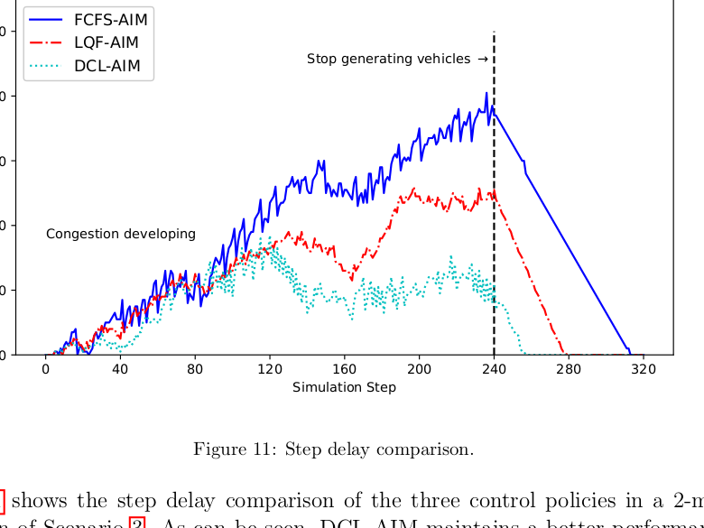
The step-delay plot shows how delay accumulates during congestion and how quickly each policy clears the queue after arrivals stop.
相比平均延误，step delay 更像过程诊断图：可以看出哪个策略在拥堵形成后更快恢复。
Fig. 11 展示 DCL-AIM 的拥堵疏散优势。
DCL-AIM keeps delay lower during the congested period and returns to zero faster than the alternatives.
这说明 DCL-AIM 不只是轻流量下好，也能在拥堵过程中选择更有效的释放顺序。
DCL-AIM 在拥堵演化过程中保持较低延误。
The conclusion begins by restating AIM as a CAV-specific alternative to conventional intersection control.
作者回到宏观动机：CAV 允许更细粒度、更自动化的路口控制，因此 AIM 是信号控制之外的方案。
结论重申 CAV-AIM 的应用价值。
Page 21: Discretization Level 2, Final Conclusions, and Future Work
Conclusion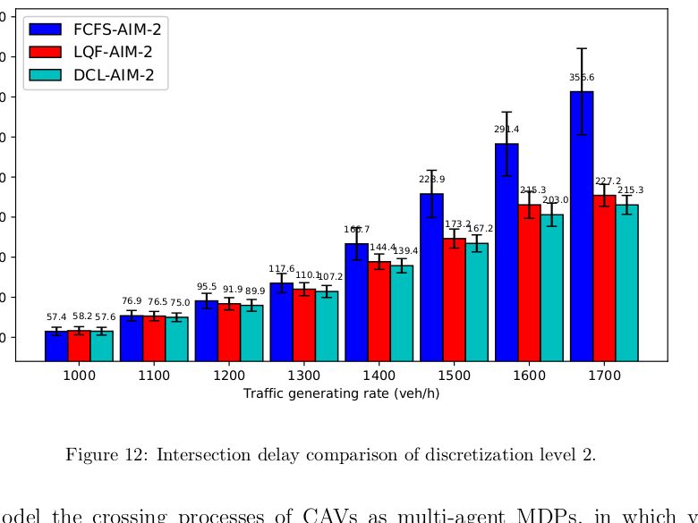
The level-2 experiment shows similar qualitative conclusions under a finer cell grid, although delay levels and variance change.
这说明 DCL-AIM 不只适用于粗网格；但 finer grid 下所有方法延误都更大，说明细粒度表达增加了决策复杂度。
Level 2 验证了方法在细粒度离散下仍有效。
The conclusion states that CAV crossing can be modeled as multi-agent MDPs with cooperative rewards and collision-free constraints.
作者最终把本文贡献压缩为：MAMDP 建模、DCL 分解、无碰撞约束、延误最小化 reward、仿真优于 baseline。
全文结论是 DCL-AIM 能学习更优通行序列。
The future-work paragraph admits limitations: fully observable isolated intersection today, partial observability and network-wide management tomorrow.
这正是论文的边界。现实部署需要考虑多路口协调、通信缺失、感知误差和混合交通。
未来工作指向部分可观测和网络级 AIM。
Page 22: References Map I, AIM Foundations
Referencesrefs
This reference page mostly anchors the paper in established AIM and traffic control literature.
不用逐条翻译，但要识别哪些是“定义问题”的引用，哪些只是背景补充。
Page 22 是 AIM 基础引用池。
Page 23: References Map II, Optimization-based AIM and Scheduling
Referencesrefs
The optimization references are useful for framing AIM as a constrained sequencing and resource allocation problem.
这组引用可以帮你把“路口通行”自然过渡到“调度/资源分配”语言。
Page 23 是 JSSP/AIM 相关引用的重点区域。
Page 24: References Map III, MARL and DCL Theory
Referencesrefs
The learning references provide the theoretical language for dimensionality, nonstationarity, and local coordination.
这些引用不是你的主线，但能帮助你准确评价 DCL-AIM 为什么这样设计。
Page 24 支撑 MARL/DCL 理论背景。
Page 25: References Map IV, Simulation, Evaluation, and Takeaway
Referencesrefs
The final reference page rounds out the empirical and methodological background rather than adding new claims.
读 references 不需要平均用力。对你的论文最有用的是：AIM 基础、优化/调度式 AIM、MARL/DCL、实验评价四类。
References 的价值在于建立你的 related work 框架。